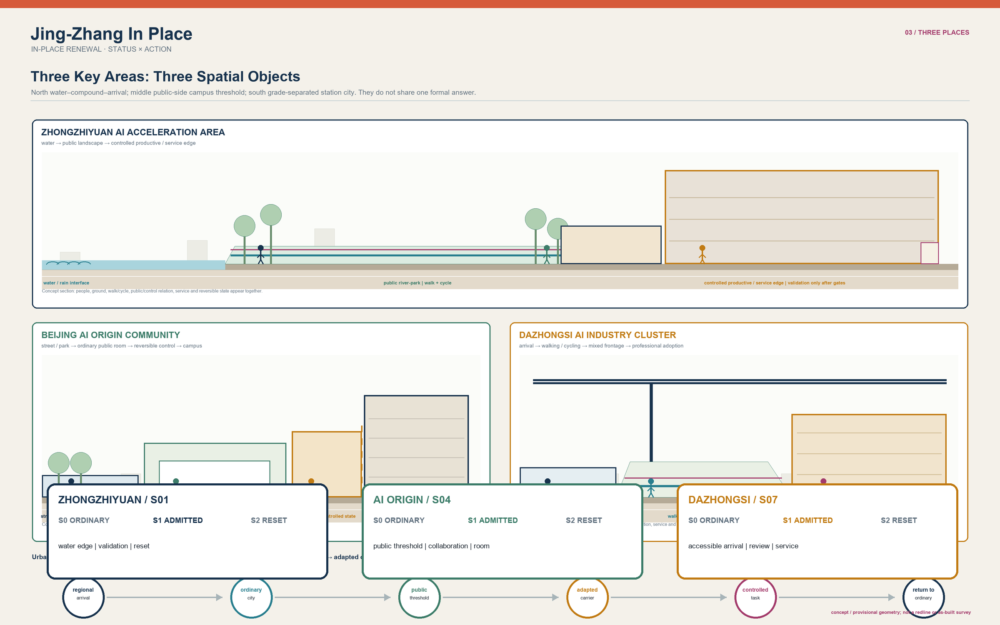
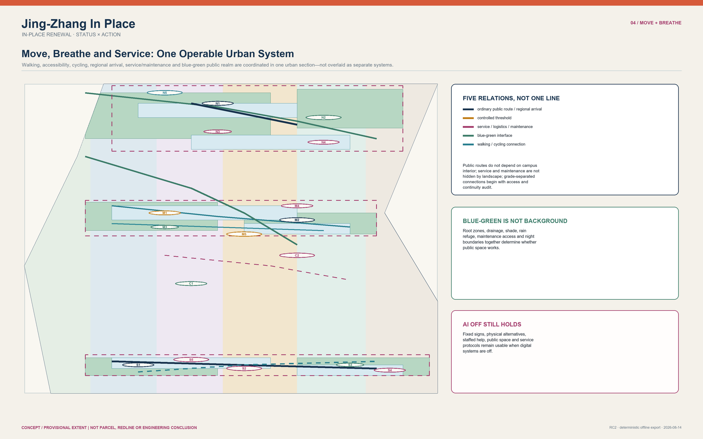
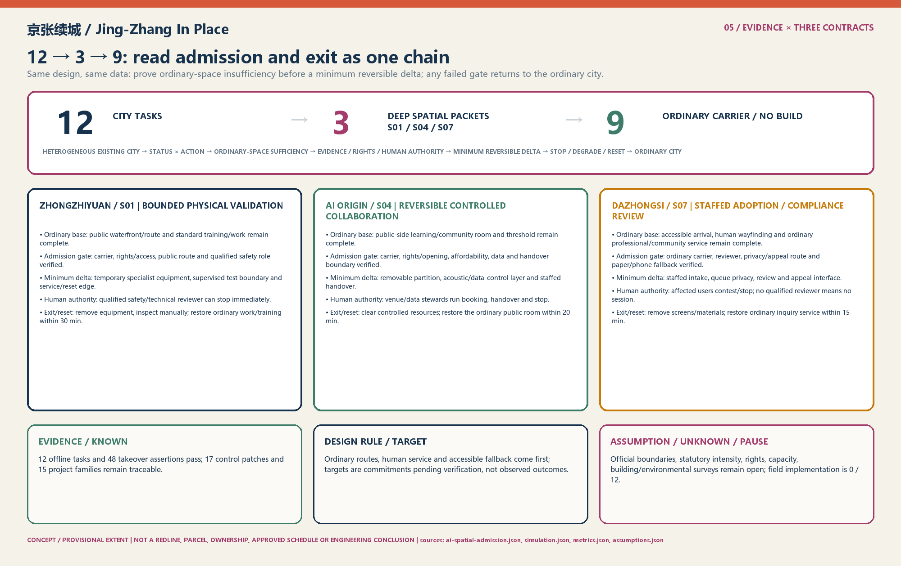

Jing-Zhang In Place
A status-and-action urban field that keeps the ordinary city complete while admitting only bounded, reversible AI tasks.
Jing-Zhang In Place
Core Thesis: Jing-Zhang is not a blank line waiting to be filled with AI, but an existing city with unequal statuses, jurisdictions, and cross-sections. The proposal employs
STATUS × ACTIONto establish the baseline spatial floor first, upholdingAI_OFF_CITY(where ordinary public streets, mixed daily life, step-free routes, and human services operate 100% completely without AI intervention). Across 12 urban tasks, it strictly enforces the "ordinary-space sufficiency test," admitting only S01, S04, and S07—where physical testing, controlled collaboration, and compliance review are demonstrably insufficient in ordinary rooms—as deep spatial packets. The remaining 9 tasks are explicitly NO-BUILD or ordinary carriers. All admitted specialist spaces are equipped with strict Time-To-Live (TTL), absolute human authority, and immediate physical reset mechanisms. Spatial data
---
Three Reading Paths: 60 Seconds, 5 Minutes, Deep Read
To accommodate reviewers with varying time budgets and focus areas, three self-contained reading paths are provided:
| Path | What to Read | Questions Answered |
|---|---|---|
| 60 Seconds | Core Thesis ｜ Three Core Evidence Readings ｜ Five Core Figures with Reading Guides | What problem the proposal solves, what it delivers, and what it strictly avoids |
| 5 Minutes | Three Scopes ｜ STATUS × ACTION Spatial Mending ｜ Three Key Area Typologies ｜ 12→3 Admission & 9 NO-BUILD Tasks ｜ A Citizen's Day | Spatial structure, jurisdictional boundaries, scenario deployment, and human lived experience |
| Deep Read | Full text reading ｜ Cross-audit against simulation.json, metrics.json, compliance_matrix.json, and assumptions.json | Field triggers, recalculation methods, and exit responsibilities for every spatial and institutional claim |
Three Core Evidence Readings: 1. Offline State-Machine Rehearsal: 12/12 tasks passed; Handover Assertions: 48/48 passed; 2. Three Deep Delivery Contracts: CONTRACT-S01 / CONTRACT-S04 / CONTRACT-S07 close ordinary baseline, admission gate, minimum reversible delta, human authority, and exit/reset side by side; read FIG.05 first, then deepen through this section and the delivery mechanism chapter; 3. Field Engineering & Live Deployment: 0/12, strictly reserved for the field environment, contingent upon official data release, statutory redlines, and formal authorizations. Metric
---
Historical Heritage & Spatial Precedents: Alignment, Crossing, and Handover
The Jing-Zhang Railway left not merely a physical alignment, but engineering wisdom for navigating complex urban constraints: 1. Switchback Alignment (Trading Distance for Gradient): Jeme Tien Yow solved the steep mountain gradient at Qinglongqiao with a switchback ("人" shape). This proposal translates that into "Trading Admission for Resilience"—avoiding blanket corridor-wide AI deployment in favor of spatial graduation and reversible admission to handle technological uncertainty. Source 2. Level Crossing Stitching (Grade Crossings and Separation): Historic level crossings evolved into contemporary urban stitching seams such as Tsinghua East Road and Zhichun Road. This proposal insists on continuous surface pedestrian routes and independent step-free paths, preventing technological apparatus from severing daily civic life. Source 3. Handover Accountability (Dual-Confirmation Protocol): Railway handover protocols mandate that incoming and outgoing shifts verify status and unresolved items never disappear. This proposal establishes a complete S0 Ordinary City → S1 Admitted Specialist State → S2 Reset/Exit handover chain, ensuring every technological intervention has a designated signatory and an exit ticket. Source
---
Design Basis and Source List
The open-call announcement, taskbook, allowed design space, standards, and source registry constitute the primary control inputs. Location-specific claims remain strictly limited to the spatial and temporal scope supported by each source; international precedents serve as methodological inspiration rather than evidence for a Jing-Zhang project, partnership, or site. Source Source Source The provisional envelope and three key-area rectangles serve conceptual, topological, and communication purposes only; they must never be construed as statutory redlines, property parcels, ownership boundaries, or planning approvals. Source Depth

How to Read This Figure (FIG.01 Site State and Three-Level Scope): 1. Verify Three-Level Nesting: Examine the nested relationship between the 43.6 km² coordination zone, the 11.4 km² overall design zone, and the three key areas; 2. Identify Provisional Boundaries: Note that provisional boundaries and survey-required constraint areas are rendered with dashed linework without asserting unverified official redlines; 3. Confirm Evidence Traceability: Review the underlying evidence tiers to ensure all spatial assertions are auditable and grounded.
---
Three-Level Scope Framework
The 43.6 km² coordination scope addresses ecosystem, talent, and public-service synergy; the 11.4 km² overall scope organizes urban design through status, action, connectivity, and public space; the three key areas address distinct cross-sectional and operational challenges. The three tiers are not mere zoom levels of a single axis, but are governed by evidence granularity, jurisdictional responsibilities, and permissible actions. Source Metric Metric This scope framework is verified through a traceable hierarchy. Depth When official geometries are released, all geometries, metrics, drawings, and action interfaces must be recalculated synchronously. To prevent scale misinterpretations, the coordination tier states asset/interface relationships only, the overall tier states provisional topologies only, and the key-area tier states typological sections only.
---
Coordinated Research Area: Industry and Future City Research
The coordinated scope identifies six asset categories: research/educational controlled perimeters, existing innovation carriers, enterprise–professional service interfaces, regional gateways, river/park heritage, and daily residential communities. These assets form a multi-entry ecosystem through public-side rooms, verified existing carriers, ordinary mixed blocks, and maintenance access, rather than assuming corporate relocations, campus mergers, or forced perimeter removals. Source Source Depth Drawing from Seoul AI Hub, Vector, Mila, Singapore PlatformAI, and Digital Catapult, the proposal adopts mechanisms of responsibility, service, verification, and exit rather than replicating architectural forms. Source Source
---
Overall Design Area: Urban Renewal and Regulatory-Plan-Level Urban Design
The overall structure is organized via STATUS × ACTION: five existing conditions (BUILT_OPERATING, APPROVED_OR_IN_DELIVERY, CONTROLLED_ACCESS, SURVEY_ONLY_UNKNOWN, and VERIFIED_ADAPTABLE) map to five bounded actions (RETAIN, REPAIR, OPEN_EDGE, SUBDIVIDE_RECONNECT, and ADAPT_INFILL). Each patch records its source, constraints, users, triggers, cross-section, mobility, services, blue-green assets, responsibility, stop triggers, and exit routes; wholesale demolition and replacement is excluded from the default action catalog. Spatial data Metric Depth Development intensity and height controls utilize street enclosure, ground-floor permeability, threshold depth, and service-edge rules, with statutory numerical limits pending official government release. Standard Depth Depth
AI spatial admission is not a secondary urban spine: it is a bounded task evaluation within an already permitted action. Ordinary paths, ordinary rooms, maintenance, and human services take precedence; if ordinary space is sufficient, evidence or rights are inadequate, or qualified human authority is absent, the outcome is an ordinary carrier, removable general-purpose kit, or NO BUILD, rather than reserved construction for AI. Spatial data

How to Read This Figure (FIG.02 Land Use, Action Patches, and Urban Stitching): 1. Review 5×5 Status-Action Matrix: Confirm the baseline status and restricted action assigned to each of the 17 patches, rejecting indiscriminate tabula-rasa redevelopment; 2. Check Public Continuity: Verify that green open space and mixed service interfaces remain uninterrupted without technology trials blocking daily access; 3. Verify Topological Integrity: Check that conceptual land use forms a complete partition with zero overlaps and zero gaps, mathematically derived in EPSG:4548.
| Status | Action Determination | Non-Negotiable Boundary |
|---|---|---|
| BUILT_OPERATING | Retain or repair proven defects | Do not extrapolate open status to adjacent unverified carriers |
| APPROVED_OR_IN_DELIVERY | Coordinate interfaces first, mend gaps second | Do not mislabel in-progress delivery as fully open access |
| CONTROLLED_ACCESS | Public side first; separate visitor from project access | Do not rely on campus internal roads for public through-movement |
| SURVEY_ONLY_UNKNOWN | Survey only, reversible testing, or NO BUILD | Do not diagnose property rights, structural health, or utility capacity |
| VERIFIED_ADAPTABLE | Adapt only after professional and rights gates pass | Do not treat typological prototypes as definitive building diagnoses |
---
Detailed Design of Key Areas
Zhongzhiyuan is framed as a water–compound–regional arrival mosaic: restricting physical validation to verified carriers, while segregating public riverfront parkland, service resets, and controlled testing. AI Origin serves as a public-side campus threshold: ensuring permanent city routes do not traverse campus interiors, establishing ordinary learning/community rooms first, and switching to a temporary specialist state only during authorized sessions. Dazhongsi is structured as a multi-level station-city renewal field: focusing on four-direction accessibility, surface continuity, cycling, loading, and daily commerce, without treating provisional rectangles as final station exits or parcel plans. Source Source Source These three key areas satisfy detailed urban design depth. Depth No single architectural courtyard, lobby, or AI room typology may be duplicated across the three sites.
Dazhongsi Multi-Level Station-City: Four-Quadrant Conceptual Design Organization (Four-Quadrant Design Organization)
To address the localized geometric offset between the provisional rectangular envelope and physical station infrastructure, the proposal establishes a four-quadrant conceptual design organization network (Design Organization), anchoring around verified Line 13 (Exits A/B) and Line 12 (Exits D/E) access points to coordinate four-direction barrier-free connectivity (without asserting official station geometry):
- North-East Quadrant (Heritage Buffer & Ecological Forecourt): Interfaces with the historic Dazhongsi Ancient Temple Museum and its statutory conservation redline, prohibiting high-intensity structures and establishing a 30m-deep low-disturbance cultural greenway and acoustic buffer;
- North-West Quadrant (University Tech Cluster Interface): Traverses Zhongguancun South Avenue via existing pedestrian street-crossing facilities to form a continuous 6.0m-wide slow-mobility link connecting university research campuses;
- South-West Quadrant (North 3rd Ring Bus & Convenience Commerce Interface): Coordinates North Third Ring West Road surface bus interchange, utilizing stepped terraces for bicycle parking, transit transfers, and neighborhood convenience retail;
- South-East Quadrant (Jing-Zhang Greenway Portal & Station Access Interface): Seamlessly connects Line 13 (Exits A/B) and Line 12 (Exits D/E), establishing all-weather step-free interchange concourses and dedicated community convenience spaces.
All three interfaces follow a scale-free typology of S0 Ordinary City → S1 Admitted Specialist State → S2 Exit/Reset, asserting no property parcel, engineering dimension, station portal, or statutory control. Zhongzhiyuan ensures public waterfront pathways remain uninterrupted, confining validation within carriers (clear width 6.0m, clear height 4.5m, 1.2m crash rail [DESIGN_ASSUMPTION]) and restoring maintenance and ordinary training upon equipment removal; AI Origin maintains public thresholds and ordinary rooms (clear width 8.0m, clear height 3.8m, STC 42 acoustic partitions [DESIGN_ASSUMPTION]), utilizing demountable partitions and human sign-offs during authorized collaborations, fully restoring general use upon clearing; Dazhongsi guarantees independent step-free arrival and staffed services (clear width 12.0m, clear height 4.2m, 1.8m privacy screens [DESIGN_ASSUMPTION]), re-purposing staffed compliance review spaces for general civic services upon session close. Spatial data

How to Read This Figure (FIG.03 Three Key Areas and Differentiated Cross-Sections): 1. Compare Three Differentiated Sections: Observe the distinct cross-sectional logics across the northern water-arrival mosaic, middle campus threshold, and southern grade-separated hub; 2. Audit S0–S1–S2 Cycle: Trace each key area from ordinary city (S0) to admitted specialist state (S1) to complete physical reset (S2); 3. Confirm Typological Nature: Recognize drawings as scale-free typological prototypes rather than fabricated construction blueprints; FIG.05 verifies each complete ordinary-base–admission-gate–spatial-delta–human-authority–exit/reset contract side by side.
---
AI Innovation Ecosystem, Personas, and AI+ Scenarios
Under AI_OFF_CITY, public routes, mixed urban vitality, blue-green systems, ordinary rooms, human services, and maintenance remain fully operational. AI interventions must pass the planning chain: "Ordinary City → Ordinary-Space Sufficiency Test → Special Spatial Condition Necessary? → Evidence/Rights/Human Authority Gate → Minimum Reversible Spatial Delta → TTL/Stop/Degrade → Exit/Reset → Ordinary City." AI does not replace STATUS × ACTION, nor does it automatically justify spatial expansion. Spatial data
The 12 tasks do not represent 12 construction projects: S01, S04, and S07 are the sole deep spatial packets; the remaining 9 tasks retain ordinary carriers, human services, physical alternatives, or NO BUILD. Every entry preserves human authority, TTL, stop triggers, and reset protocols: Spatial data Metric
| Task ID & Name | Industry Sector & Spatial Envelope Bounds | Sufficiency Test & Spatial Decision | Human Authority & TTL | Stop Trigger & Physical Reset |
|---|---|---|---|---|
| S01 Embodied AI Physical Validation | Embodied robotics & environmental sensing; clear 6.0m × 4.5m, 1.2m crash rail [DESIGN_ASSUMPTION] | Deep: Controlled testing, observation, reset edge (virtual simulation insufficient) | Qualified operator/reviewer; Session | 60s breach power shutoff; 30-min kit removal, restore standard workstations |
| S02 Environmental Robustness Test | Software-in-the-loop algorithm testing; zero street occupancy | NO BUILD; pure software simulation and verified carrier windows sufficient | Human responsibility; Test window | Unverified carrier or public disturbance; retract boundary, restore carrier |
| S03 Human Safety Review | Regulatory compliance review; standard conference room setup | NO BUILD; ordinary desktop audit and existing office space sufficient | Independent compliance reviewer; Evidence version | Stale evidence; archive/delete authorization, restore standard meeting room |
| S04 Multi-Modal Foundation Model Collaboration | Multi-modal interaction R&D; clear 8.0m × 3.8m, STC42 acoustic curtain [DESIGN_ASSUMPTION] | Deep: Modular partition, directional audio, handover (general study hall insufficient) | Site safety monitor; Booking session | 60s threshold breach or route blockage; 20-min partition retraction to study hall |
| S05 Open Science & Model Education | Public AI literacy; standard community activity rooms | NO BUILD; portable modular teaching kits and multi-purpose hall sufficient | Community facilitator; Event | Absent host or accessibility conflict; restore standard community room |
| S06 Community Co-Pilot Service | Grassroots civic affairs; standard neighborhood service counter | NO BUILD; human service desks and existing counters sufficient | Staffed social worker; Service cycle | System offline or service anomaly; 100% immediate fallback to in-person counter |
| S07 Transit Flow Management & Compliance Review | Station-city multi-agent guidance; clear 12.0m × 4.2m, 1.8m privacy screen [DESIGN_ASSUMPTION] | Deep: Privacy queue, low-heat infrared array, review desk (open concourse insufficient) | Station compliance officer; Policy version | 15s data anomaly or monitor absence; 15-min screen removal to open concourse |
| S08 Step-Free Wayfinding Aid | Universal accessibility navigation; physical tactile paving | NO BUILD; continuous tactile paving, ramps, and staff guidance sufficient | Transit duty officer; Facility status | Unverified path status; 100% reliance on physical signage and staff |
| S09 Post-Rain Greenway Maintenance | Ecological infrastructure; standard municipal work orders | NO BUILD; manual field inspection and standard maintenance routines sufficient | Landscape maintenance crew; Work order validity | Absent on-site verification; remove temporary barriers post-inspection |
| S10 Facility Status Real-Time Relay | Public utility monitoring; physical ground signage | NO BUILD; static decision-point signage and physical alternatives sufficient | Facility operator; Status window | Stale data instantly retracted; permanent physical signage persists |
| S11 Quiet Boundary for Community Events | Temporary civic events; removable acoustic barriers | NO BUILD; human stewarding and portable acoustic baffles sufficient | Event safety lead; Event duration | Noise >65dB triggers immediate stop; dismantle event gear and restore plaza |
| S12 Statutory Evidence Status Review | Dynamic planning updates; standard archival systems | NO BUILD; professional urban planner review and version audit sufficient | Principal planner; Data version | Missing statutory basis forbids automatic build; preserve baseline plan status |
12 scenario cards, 3 industry validations, and 8 personas cover daytime, nighttime, weekends, weather extremes, and digital/physical failures. Metric Metric Metric Municipal and infrastructure capacities require professional verification. Depth
---
Implementation Feasibility, Statutory Oversight, and Cost Tiering
Rather than presenting all 15 renewal projects as ungrounded construction promises, precise D0–D100 concept delivery contracts are established for the three admitted deep spatial packets (S01, S04, S07). In accordance with the Beijing Urban Renewal Regulations, the statutory oversight responsibility, proposed governance safeguards, and budget classifications are established: Spatial data
1. Statutory Oversight & Proposed Governance Safeguards
- Statutory Administrative & Approval Authorities (法定行政监管与审批主体): The Local Sub-district Office (属地街道办事处, territorial administration and public safety coordination) and Haidian Planning and Natural Resources Bureau (海淀规自分局, statutory planning and public-interest oversight), holding statutory oversight and administrative revocation authority;
- Proposed Renewal Implementing Entity (方案建议实施主体): Designated jointly by the sub-district and property owners under the Beijing Urban Renewal Regulations, responsible for formulating renewal schemes, securing statutory filings, and coordinating on-site works;
- Proposed Independent Compliance Review Panel (方案建议独立合规评审组): A multidisciplinary advisory body (planners, legal, accessibility, and ethics experts) holding a unilateral recommendation pause power;
- Proposed On-Site Human Safety Monitor (方案建议现场安全监测员): Certified safety duty personnel directly controlling physical Emergency Stop (E-Stop) switches to initiate manual override and spatial reset upon safety deviations.
2. Proposed Indicative Pre-Feasibility Cost Bands
- Class I Low-Impact Demountable Micro-Intervention (<= 500k RMB, indicative planning band): Prefabricated lightweight partitions, portable acoustic screens, and teaching kits; funded via sub-district micro-renewal allocations and operator self-financing;
- Class II Medium-Impact Spatial Mending (500k–3.0M RMB, indicative planning band): Plug-and-play MEP retrofit, step-free ramp gradient smoothing, and acoustic/electrochromic envelopes; supported by the Haidian District Urban Renewal Special Fund;
- Class III Long-Horizon Interface (> 3.0M RMB, conditional planning interface): Grade-separated crossings and underground transit links designated as
CONDITIONAL_LONG_HORIZON_INTERFACE(long-horizon conditional planning interfaces), advancing only upon formal public capital approvals and not part of immediate works.
3. Quantitative Operational Triggers (T1–T3)
- Trigger T1 (Boundary Breach): Physical testing envelope, acoustic threshold (>65dB), or sightline boundaries breached; system triggers audiovisual alert and cuts power to testing apparatus within 60 seconds;
- Trigger T2 (Unstaffed Failure): Human reviewer or safety monitor absent for >5 minutes without qualified replacement; system automatically locks specialist gear and restores public access;
- Trigger T3 (Authorization Expiry): Session TTL expires or referenced regulatory version is deprecated; local temporary caches clear, and space must be restored within 30 minutes.
| Delivery Contract | D0–D30 Preparation | D31–D60 Setup & Testing | D61–D100 Operation & Handover | Fast Reset & Fallback |
|---|---|---|---|---|
| CONTRACT-S01 Zhongzhiyuan | Insufficiency dossier, carrier tenure, safety role audit | Observation gallery, removable test envelope, plug-in power | Bounded testing; monitor path safety and emergency stop | 30-min kit removal, restore standard workstations/training |
| CONTRACT-S04 AI Origin | Public-side carrier, opening hours, data boundary approval | Modular acoustic partitions, dedicated visitor access | Authorized booking; verify zero public-route encroachment | 20-min partition retraction, restore open community space |
| CONTRACT-S07 Dazhongsi | Standard desk baseline, privacy routing, paper fallback | Privacy screen, staffed appeal/review station | Staffed review sessions; rehearse paper referral and contest | 15-min screen removal, restore standard inquiry desks |
---
Public Interest Floor, Quantitative Accessibility, and Anti-Displacement Covenant
The proposal measures planning success primarily through accessibility for vulnerable groups and everyday citizens, establishing an enforceable quantitative public-interest baseline: Spatial data
1. Proposed Quantitative Accessibility Floors & Targets
- 100% Continuous Step-Free Trunk Route Target: Across the 11.4 km² overall design zone, all primary pedestrian and slow-mobility spines target 100% level continuity, with longitudinal slopes capped at 1:20 [SOURCE_BACKED: GB 50763] and zero unnecessary step barriers;
- <= 300m Walking Radius to Human Service Desks Target: Every neighborhood catchment targets a staffed civic desk, physical guide kiosk, or emergency hotline within a 300m walking radius;
- 100% Offline Non-Digital Service Retention Commitment: All public administrative, healthcare, transit, and cultural services commit to retaining physical paper forms, dedicated staffed counters, and cash/paper voucher processing;
- >= 15% Sheltered Rest Seating Area Target: Weather-sheltered, slip-resistant benches are planned every 150m along public spines, with dedicated seating areas occupying >= 15% of public open space nodes.
2. Anti-Displacement & Community Covenant Commitments
- 100% Retention of Existing Small Convenience Businesses Commitment: Prohibiting the displacement of street-level breakfast kiosks, repair shops, and community groceries under the guise of "smart upgrading," safeguarding affordable daily living costs;
- Localized Employment Priority: Maintenance, landscaping, security, and facility assistance jobs created by renewal interventions give formal priority to local residents;
- 100% Free Public Open Space Commitment: All outdoor riverfront parks, greenways, and science exhibition lawns along the Jing-Zhang corridor remain completely free and open to the general public, strictly barring commercial enclosures.
3. A Citizen's Day: Morning Routine of 72-Year-Old Resident P4
08:15 Dazhongsi Residential Quarter: 72-year-old Mrs. Li (with mild hearing impairment and no smartphone) steps out for morning groceries. She walks along a continuous 1:22 step-free ramp and clear physical wayfinding signage, requiring zero QR scans or facial recognition. 08:45 Community Service Center (S07 Node): Mrs. Li inquires about medical insurance reimbursement. The center maintains a brightly lit, staffed counter (220m from her home) where a community worker assists face-to-face; even if the AI copilot undergoes maintenance or goes offline, paper guides and human workflows proceed without interruption. 09:30 Tsinghuayuan Heritage Park (near S04): Mrs. Li rests on a sheltered bench (spaced every 120m). The adjacent AI collaboration workshop is fully enclosed within internal lightweight partitions, leaving the park's tree-lined avenues, benches, and open lawns completely unencumbered by sensors or private enclosures. Local breakfast kiosks operate normally outside the park, preserving vibrant neighborhood life.
---
Land Use, Building Scale, and Retain-Renovate-Demolish Strategy
Land use categories conceptually cover green open space, retained adaptive space, public learning, mixed services, slow-mobility services, and conditional reserves, without asserting statutory zonings or parcel adjustments. Building massing layers represent typological concept carriers rather than structural diagnoses. The action sequence prioritizes retaining working systems, repairing proven deficits, opening edges, subdividing/reconnecting, and adapting/infilling; individual building replacement requires independent structural, fire, heritage, ownership, and public-interest proof. Standard Spatial data Spatial data Depth
---
Transport, Rail, Municipal Infrastructure, and Public Services
Transportation systems segregate regional rail arrivals, standard public streets, pedestrian/step-free routes, cycling, parking/drop-off, loading, maintenance, emergency access, and institutional thresholds. Every conceptual connection is classified as VERIFIED_EXISTING, CONTEXTUAL, CONCEPTUAL, or SURVEY_REQUIRED; no bridge, underpass, redline, or capacity is portrayed as an approved project. Spatial data Source Depth Utilities (power, telecom, compute, water/drainage, waste, fire) follow the "Known–Unknown–Rules–Future Verification" sequence, utilizing qualified existing resources first and expanding only upon verified demand. Metric Depth

How to Read This Figure (FIG.04 Mobility, Services, and Blue-Green Network): 1. Verify Slow-Mobility Independence: Confirm that continuous step-free and cycling networks are decoupled from controlled campus perimeters; 2. Check Connection Statuses: Review the explicit classification of connections into verified existing, contextual, and survey-required; 3. Audit Ecological Safeguards: Confirm that green corridors incorporate soil depth, root zone, and stormwater capacity verifications.
---
Blue-Green Network, Public Space, and Urban Character
The Heritage Park, Qinghe River, Xiaoyue River, ordinary streets, courtyard forecourts, campus public edges, and station plazas represent distinct landscape typologies. Each design intervention undergoes checks for soil depth, root zones, drainage, shade, maintenance, seasonal shifts, night lighting, and accessibility; green and public space ratios are geometry-derived consistency figures rather than statutory metrics. Source Source Metric Metric Depth Prior to execution, every green patch requires tree/soil/drainage surveys; any conflict triggers the removal of temporary installations and restoration of baseline maintenance conditions.
---
Renewal Projects, Implementation Policy, and Phasing
15 project families originate from G0 evidence/interface registration and accessibility audits. G1 implements low-regret repairs and single-consent reversible trials; G2 undertakes adaptive retrofits following independent professional review; G3 performs conditional infill upon official controls and proven capacity deficits; G4 maintains operations and iterative evidence updates. Every project defines primary evidence, dependencies, beneficiaries, AI/NO-AI modes, KPIs, stop conditions, and responsible roles. Spatial data Metric Depth Depth
| Phase | Core Evidence Gate | Permissible Actions & Scope | Exit & Reset Conditions |
|---|---|---|---|
| G0 Preparation | Sources, status, tenure, access, and capacity baseline survey | Evidence alignment, interface audit, asset registry | Missing data or rights conflicts halt progression |
| G1 Inception | Written stakeholder consent, step-free alternative proof | Low-regret physical repairs and reversible micro-trials | Public obstruction or resident complaints trigger removal |
| G2 Deepening | Structural safety, fire compliance, heritage protection review | Selective interior adaptation of existing buildings | Failure of professional review stops work |
| G3 Completion | Official redlines available, capacity deficit proven, public audit | Conditional stitching and essential civic infill | Absence of statutory baseline prohibits new permanent builds |
| G4 Operation | Maintenance logs, public feedback, continuous evidence versioning | Long-term stewardship, periodic audits, and rule updates | Depleted maintenance funds or service gaps trigger shutdown |
---
Metrics, Area Recalculation, and Compliance Matrix
All computable areas and lengths are derived deterministically from GeoJSON layers in EPSG:4548: provisional site, concept land use, building footprints, green/public spaces, and concept connections are designated as GEOMETRY_DERIVED. Statutory FAR, height limits, and utility capacities are designated as UNKNOWN, refusing to substitute graphic precision for evidence. Metric Metric Metric Concept connection length is a separate non-engineering indicator. Metric Recalculation rules are fixed in the design depth index. Depth Three matrices link all tasks, standards, and depth items to specific prose, layers, metrics, drawings, sources, assumptions, and review gates.

How to Read This Figure (FIG.05 Three-Contract Reviewer Spine): 1. Start with 12→3→9: Only S01 / S04 / S07 form deep spatial packets; the other nine tasks retain ordinary carriers or NO BUILD; 2. Then Verify the Three Contracts by Column: Each column keeps ordinary baseline, admission gate, minimum delta, human authority, and 15–30 minute physical reset together; 3. Finally Separate Evidence States: Known/derived, design rule/target, and assumption/unknown/pause are visibly distinct, so targets cannot masquerade as observed outcomes.
---
Risk, Copyright, and Compliance
Risk control does not relabel unknowns as complete. It converts every unknown into a survey, recalculation, consent, professional review, stop trigger, or exit condition. Official boundaries, southern geometric offsets, building tenure, curb management, utility capacities, environmental surveys, campus schedules, and AI carriers remain active constraints even when tools return PASS. Spatial data Depth Standard Figures are deterministically generated locally without commercial map tiles, remote fonts, CDNs, private data, or uncleared media. This submission represents conceptual urban design recommendations; final determinations rest with human authorities and qualified professionals.
---
References
The complete source index records publishers, URLs, dates, authorities, supported claims, and unsupported boundaries; the assumptions index tracks impacts and closure paths. Public sources support only their declared spatial/temporal scales, and international precedents remain background methods. The Owner selected "Jing-Zhang In Place" as the participant's final submission candidate. This internal selection does not represent a competition result, award claim, official adoption, implementation approval, or government endorsement. Source Source Source PlatformAI is background methodology only, never a local service commitment. Source